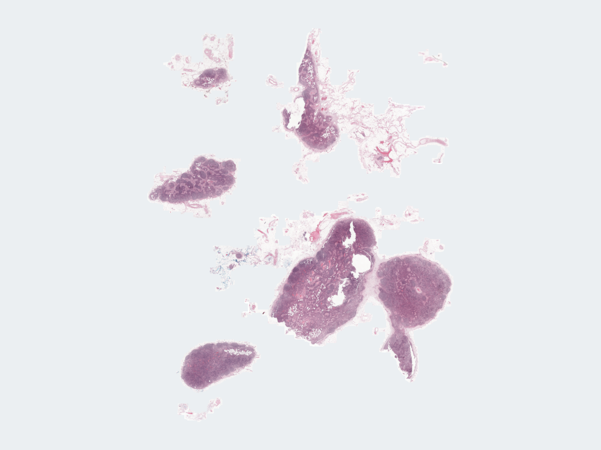

tumor_087
Metastasis-positive official reference · five of five methods complete · one of 20 selected slides
View matched result →Original source at AWS ↗Inspect Bora GeoJSON →
BORA · BENCHMARK VIEWER
A selected eight-slide binary-metastasis technical study. The historical five-method gallery fitted CAMELYON16 heads on tumor_093 and normal_093. A separate later Bora head used tumor_093 alone. The same six already inspected slides were scored; this is a technical reanalysis, not an independent test. Original whole-slide images remain with the AWS source.
Official mask codes 1 and 2 provide the known-pixel denominator: nonmetastatic tissue and metastasis. Code 0 is unscored. The three metastasis-positive test slides have 104,761, 153,274 and 155,007 positive pixels on the 4 µm comparison grid; the three benign controls have none. Predictions are shown natively and after clipping to the same H&E-only tissue support. For five unchanged slides, known official pixels outside support remain in their historical score denominators; the post hoc normal_019 correction scores only known pixels inside its revised tissue area. All five displayed methods completed all six selected test slides: 30 of 30 method-slide scores passed independent audit.
Bora has a CAM-pair-fitted binary ridge head using 32 selected Virchow2 channels. U-Net and DeepLabV3+ have CAM-pair-adapted binary heads, with their earlier non-CAM pretraining disclosed in the methods. MedSAM used U-Net-derived boxes; VISTA-PATH used its released generic “tumor” vocabulary, which is not a metastasis-specific class. Their scores are descriptive and cannot establish a common architecture ranking. KODAMA–Bora's anonymous joint route was capacity-inadmissible: 40,411 strictly admitted tiles exceed its 10,000-tile default cap, and it has no validated binary tumor naming head.
Interpretation: six selected slides cannot estimate population performance. Scanner metadata place both source centers in fitting and test; patient separation remains unverified. The benign IoU is undefined because its reference has no metastasis. No eight-class whole-slide accuracy is claimed.
normal_019 correction: Visual review found that the original support missed pale adipose around two tissue cores, while the original specificity included known pixels outside the support. The revised H&E-only support and all five method results are shown on its slide page. Its corrected specificity denominator is 620,363 known tissue pixels; the earlier 652,254-pixel denominator is historical. This post hoc selected-slide correction is reported separately from the original six-slide aggregate and is not a new independent test.
One of 20 selected public training-release slides has completed the five-workflow, independently audited analysis so far. Bora used tumor_093 alone for fitting. U-Net and DeepLabV3+ used two CAM slides, so the workflows have unequal supervision. This is neither a hidden challenge test nor a verified patient- or center-disjoint split. The six earlier inspected development slides remain separate below.
Metastasis-positive official reference · five of five methods complete · one of 20 selected slides
View matched result →Original source at AWS ↗Inspect Bora GeoJSON →
| Method on tumor_087 | Native IoU | Native balanced accuracy | Official known pixels | Completion |
|---|---|---|---|---|
| Bora · tumor_093-only fit | 2.4% | 95.3% | 10,141,104 | 1/1 |
| Class-aware U-Net · pair fit | 5.9% | 61.0% | 10,141,104 | 1/1 |
| DeepLabV3+ · pair fit | 1.6% | 55.6% | 10,141,104 | 1/1 |
| MedSAM with U-Net boxes | 6.8% | 69.1% | 10,141,104 | 1/1 |
| VISTA-PATH generic tumor prompt | 1.3% | 88.2% | 10,141,104 | 1/1 |
Download this slide’s complete metric receipt. All results on this page are binary and conditional on the public-release source selection.
The CAMELYON16-specific Bora ridge head and the adapted U-Net and DeepLabV3+ binary heads were fitted using tumor_093 and normal_093 only. These slides were not included in the six-slide score table. MedSAM and VISTA-PATH used their released pretrained weights; MedSAM received boxes from the adapted U-Net.
The compact H&E previews below show the reviewed tissue area; gray marks excluded exterior glass. They are orientation images, not training masks or scored predictions. Full source slides remain at AWS.

Metastasis-positive fitting slide · training only · excluded from six scored slides

Benign fitting slide · training only · excluded from six scored slides
Exploratory focus rule: A signal is present if its displayed region contains at least one 8-connected focus of 625 pixels or more inside the common H&E tissue area. On the 4 µm grid, this is 0.01 mm². The same fixed area rule applies to both classes and was set without the six test labels. A slide can contain both signals; no qualifying tumor-like focus does not establish a benign diagnosis.
| Slide | Official reference | Bora | Class-aware U-Net | DeepLabV3+ | MedSAM with U-Net boxes | VISTA-PATH generic tumor prompt |
|---|---|---|---|---|---|---|
| tumor_084 | Metastasis present | Tumor-like: Present Non-metastatic: Present Largest tumor-like focus: 0.2788 mm² | Tumor-like: Present Non-metastatic: Present Largest tumor-like focus: 0.0102 mm² | Tumor-like: No qualifying focus Non-metastatic: Present Largest tumor-like focus: 0.0084 mm² | Tumor-like: Present Non-metastatic: Not available Largest tumor-like focus: 0.0229 mm² | Tumor-like: Present Non-metastatic: Not available Largest tumor-like focus: 0.3339 mm² |
| tumor_091 | Metastasis present | Tumor-like: Present Non-metastatic: Present Largest tumor-like focus: 0.7220 mm² | Tumor-like: Present Non-metastatic: Present Largest tumor-like focus: 0.2034 mm² | Tumor-like: Present Non-metastatic: Present Largest tumor-like focus: 0.2789 mm² | Tumor-like: Present Non-metastatic: Not available Largest tumor-like focus: 0.4082 mm² | Tumor-like: Present Non-metastatic: Not available Largest tumor-like focus: 1.4781 mm² |
| normal_019 | No reference metastasis | Tumor-like: No qualifying focus Non-metastatic: Present Largest tumor-like focus: 0.0065 mm² | Tumor-like: No qualifying focus Non-metastatic: Present Largest tumor-like focus: 0.0005 mm² | Tumor-like: No qualifying focus Non-metastatic: Present Largest tumor-like focus: 0.0009 mm² | Tumor-like: No qualifying focus Non-metastatic: Not available Largest tumor-like focus: 0.0007 mm² | Tumor-like: Present Non-metastatic: Not available Largest tumor-like focus: 0.2407 mm² |
| tumor_075 | Metastasis present | Tumor-like: Present Non-metastatic: Present Largest tumor-like focus: 2.0461 mm² | Tumor-like: Present Non-metastatic: Present Largest tumor-like focus: 0.0480 mm² | Tumor-like: Present Non-metastatic: Present Largest tumor-like focus: 0.0397 mm² | Tumor-like: Present Non-metastatic: Not available Largest tumor-like focus: 0.1257 mm² | Tumor-like: Present Non-metastatic: Not available Largest tumor-like focus: 2.7747 mm² |
| normal_108 | No reference metastasis | Tumor-like: Present Non-metastatic: Present Largest tumor-like focus: 0.0470 mm² | Tumor-like: No qualifying focus Non-metastatic: Present Largest tumor-like focus: 0.0013 mm² | Tumor-like: No qualifying focus Non-metastatic: Present Largest tumor-like focus: 0.0097 mm² | Tumor-like: No qualifying focus Non-metastatic: Not available Largest tumor-like focus: 0.0008 mm² | Tumor-like: Present Non-metastatic: Not available Largest tumor-like focus: 0.6370 mm² |
| normal_150 | No reference metastasis | Tumor-like: Present Non-metastatic: Present Largest tumor-like focus: 0.1451 mm² | Tumor-like: Present Non-metastatic: Present Largest tumor-like focus: 0.0109 mm² | Tumor-like: Present Non-metastatic: Present Largest tumor-like focus: 0.0139 mm² | Tumor-like: Present Non-metastatic: Not available Largest tumor-like focus: 0.0267 mm² | Tumor-like: Present Non-metastatic: Not available Largest tumor-like focus: 5.3976 mm² |
Only Bora, U-Net and DeepLabV3+ have an explicit non-metastatic output. MedSAM uses U-Net box prompts and VISTA-PATH uses a generic tumor prompt, so their non-metastatic signal is not available. These area calls do not change any mask, GeoJSON or pixel-level quality score and are not calibrated diagnostic predictions. Download focus counts, areas and calls. Previous any-pixel flags.
This later Bora head was fitted only on tumor_093. Its six score slides had already been inspected during the earlier two-slide study. The encoder had separate pretraining. This is a retrospective technical result, not an independent test. The five-method table below retains the historical two-slide Bora protocol; do not compare its rows with this one-slide head as a matched training-budget experiment. Native predictions are primary; shared-support predictions are secondary. For five slides the official known-pixel denominator includes pixels outside common support; normal_019 uses its corrected tissue-only domain. The balanced-accuracy table below uses tissue-only denominators, so its pixel counts differ. Benign slides have no reference metastasis, so IoU is undefined.
| Slide | Known pixels | Native IoU | Shared-support IoU | Native false-positive tissue, mm² | Native boundary F1 at 5 µm | Lesions matched |
|---|---|---|---|---|---|---|
| tumor_084 | 6,729,265 | 10.9% | 11.7% | 7.567 | 2.9% | 13/54 |
| tumor_091 | 4,244,288 | 34.3% | 37.4% | 1.431 | 5.2% | 4/9 |
| tumor_075 | 9,081,680 | 25.1% | 29.8% | 5.068 | 6.0% | 11/37 |
| normal_019 | 620,363 | undefined | undefined | 0.218 | undefined | undefined |
| normal_108 | 3,443,110 | undefined | undefined | 0.918 | undefined | undefined |
| normal_150 | 4,161,559 | undefined | undefined | 7.020 | undefined | undefined |
Positive-slide native mean IoU: 23.4% (3/3); benign mean native false-positive tissue: 2.719 mm² (3/3). Download audited score data. No new expert reference or comparator fit was used in this reanalysis.
Three positive and three benign controls were scored. Native predictions are primary; shared-support results are a sensitivity analysis on the same official known-pixel denominator. IoU is undefined for benign slides, whose false-positive tissue area is shown separately. The small selected set and different prompt dependencies do not establish a population or architecture ranking. This table summarizes the six selected slides. The three benign slide pages now show false-positive tissue area and the number and size of false-positive foci on official known tissue, which are more informative here than near-ceiling specificity. The normal_019 tissue-boundary correction was post hoc. Its false-positive tissue area is unchanged.
| Method | Positive native mean IoU | Positive shared mean IoU | Benign native mean false-positive tissue, mm² | Completion |
|---|---|---|---|---|
| Bora | 31.4% | 34.3% | 1.124 | 6/6 |
| Class-aware U-Net | 9.3% | 9.3% | 0.073 | 6/6 |
| DeepLabV3+ | 8.9% | 8.9% | 0.036 | 6/6 |
| MedSAM with U-Net boxes | 14.0% | 14.0% | 0.092 | 6/6 |
| VISTA-PATH generic tumor prompt | 24.1% | 24.1% | 4.639 | 6/6 |
Balanced accuracy gives equal weight to the two tissue classes: (metastatic recall + non-metastatic recall) / 2. It is calculated on official known pixels inside each reviewed H&E tissue area. The six-slide pooled value uses 413,042 metastatic pixels and 25,255,992 non-metastatic pixels; all five methods are complete on the same six slides. Native masks are primary and common-support masks are a sensitivity analysis. This is an inspected, selected technical set, not a population estimate.
| Method | Metastatic recall, native | Non-metastatic recall, native | Balanced accuracy, native | Balanced accuracy, shared support | Completion |
|---|---|---|---|---|---|
| Bora | 61.50% | 97.74% | 79.62% | 79.57% | 6/6 |
| Class-aware U-Net | 11.81% | 99.72% | 55.76% | 55.76% | 6/6 |
| DeepLabV3+ | 10.72% | 99.88% | 55.30% | 55.30% | 6/6 |
| MedSAM with U-Net boxes | 18.42% | 99.64% | 59.03% | 59.03% | 6/6 |
| VISTA-PATH generic tumor prompt | 68.09% | 92.49% | 80.29% | 80.29% | 6/6 |
Per-slide balanced accuracy is defined on the three tumor slides, which contain both classes. A benign slide has no reference metastasis, so metastatic recall and its two-class balanced accuracy are undefined; its non-metastatic recall remains a valid one-class score. The normal_019 known-tissue domain uses the previously disclosed post hoc tissue-boundary correction. The existing IoU, lesion and false-positive-area results remain unchanged.
| Slide | Method | Metastatic recall, native | Non-metastatic recall, native | Balanced accuracy, native | Balanced accuracy, shared support | Known tissue pixels |
|---|---|---|---|---|---|---|
| tumor_084 | Bora | 40.90% | 98.45% | 69.67% | 67.72% | 6,725,146 |
| tumor_084 | Class-aware U-Net | 0.59% | 99.81% | 50.20% | 50.20% | 6,725,146 |
| tumor_084 | DeepLabV3+ | 0.00% | 99.96% | 49.98% | 49.98% | 6,725,146 |
| tumor_084 | MedSAM with U-Net boxes | 0.88% | 99.77% | 50.33% | 50.33% | 6,725,146 |
| tumor_084 | VISTA-PATH generic tumor prompt | 56.84% | 99.16% | 78.00% | 78.00% | 6,725,146 |
| tumor_091 | Bora | 64.57% | 97.82% | 81.19% | 82.30% | 4,162,443 |
| tumor_091 | Class-aware U-Net | 15.37% | 99.59% | 57.48% | 57.48% | 4,162,443 |
| tumor_091 | DeepLabV3+ | 21.89% | 99.62% | 60.76% | 60.76% | 4,162,443 |
| tumor_091 | MedSAM with U-Net boxes | 27.43% | 99.44% | 63.44% | 63.44% | 4,162,443 |
| tumor_091 | VISTA-PATH generic tumor prompt | 84.12% | 88.95% | 86.53% | 86.53% | 4,162,443 |
| normal_019 | Bora | — | 99.68% | — | — | 620,363 |
| normal_019 | Class-aware U-Net | — | 99.98% | — | — | 620,363 |
| normal_019 | DeepLabV3+ | — | 99.92% | — | — | 620,363 |
| normal_019 | MedSAM with U-Net boxes | — | 99.98% | — | — | 620,363 |
| normal_019 | VISTA-PATH generic tumor prompt | — | 94.21% | — | — | 620,363 |
| tumor_075 | Bora | 72.38% | 97.43% | 84.90% | 84.93% | 6,768,872 |
| tumor_075 | Class-aware U-Net | 15.86% | 99.57% | 57.71% | 57.71% | 6,768,872 |
| tumor_075 | DeepLabV3+ | 6.90% | 99.91% | 53.40% | 53.40% | 6,768,872 |
| tumor_075 | MedSAM with U-Net boxes | 21.36% | 99.46% | 60.41% | 60.41% | 6,768,872 |
| tumor_075 | VISTA-PATH generic tumor prompt | 59.85% | 92.01% | 75.93% | 75.93% | 6,768,872 |
| normal_108 | Bora | — | 98.83% | — | — | 3,236,361 |
| normal_108 | Class-aware U-Net | — | 99.99% | — | — | 3,236,361 |
| normal_108 | DeepLabV3+ | — | 99.96% | — | — | 3,236,361 |
| normal_108 | MedSAM with U-Net boxes | — | 99.99% | — | — | 3,236,361 |
| normal_108 | VISTA-PATH generic tumor prompt | — | 97.13% | — | — | 3,236,361 |
| normal_150 | Bora | — | 95.89% | — | — | 4,155,849 |
| normal_150 | Class-aware U-Net | — | 99.68% | — | — | 4,155,849 |
| normal_150 | DeepLabV3+ | — | 99.88% | — | — | 4,155,849 |
| normal_150 | MedSAM with U-Net boxes | — | 99.60% | — | — | 4,155,849 |
| normal_150 | VISTA-PATH generic tumor prompt | — | 82.16% | — | — | 4,155,849 |

Metastasis-positive reference · seven matched panels · full overview and nine zooms

Metastasis-positive reference · seven matched panels · full overview and nine zooms

Benign negative control · post hoc H&E tissue-only correction · seven matched panels · overview and nine zooms

Metastasis-positive reference · seven matched panels · full overview and nine zooms

Benign negative control · seven matched panels · full overview and nine zooms

Benign negative control · seven matched panels · full overview and nine zooms
The slides used here came from the AWS Open Data CAMELYON release, which lists CC0. This site links to the original files at AWS and does not redistribute full slides. It shows compact H&E previews, derived masks and scores for the selected technical study. See the historical challenge rules and cite the CAMELYON16 JAMA challenge publication. The pair-trained fitting slides are separate from the six scored test slides. The five-slide code-only source snapshot (ZIP) contains 115 SHA256-indexed historical scripts, without slide images, annotations, features or model weights. The source index and reproduction guide document the earlier pilot; download the audited six-slide numeric aggregate. Patient separation is unverified, and these selected slides do not estimate population performance.